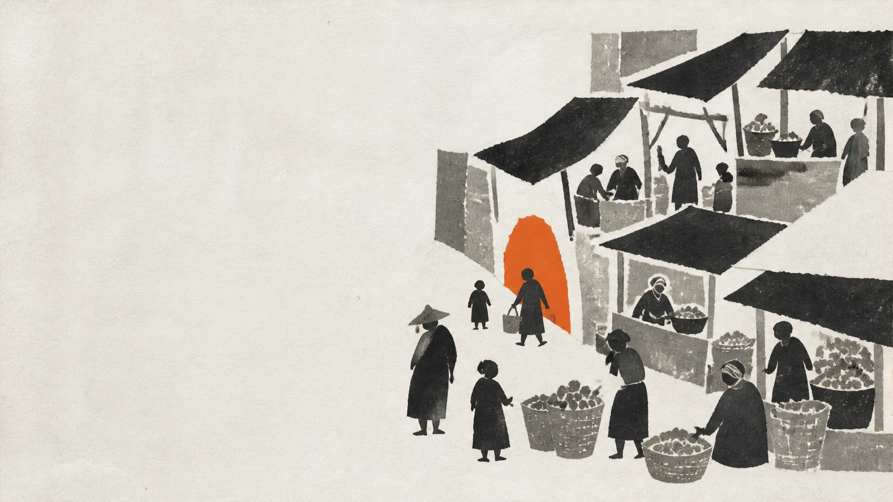
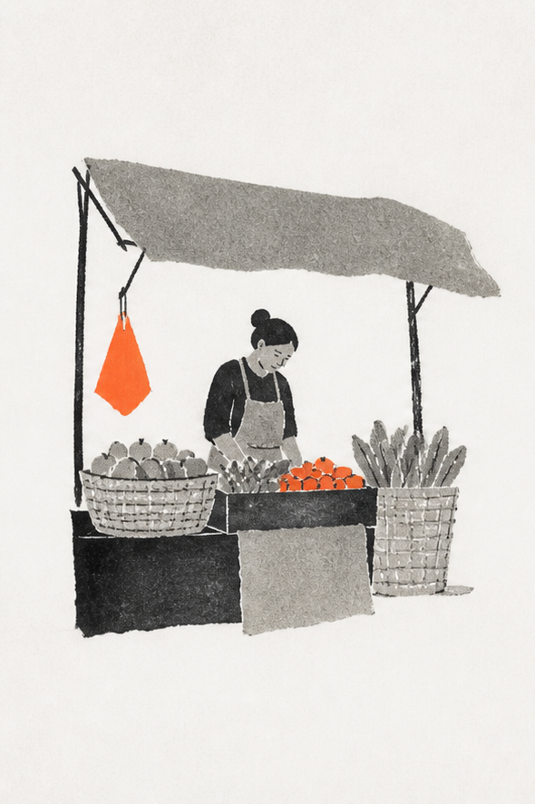
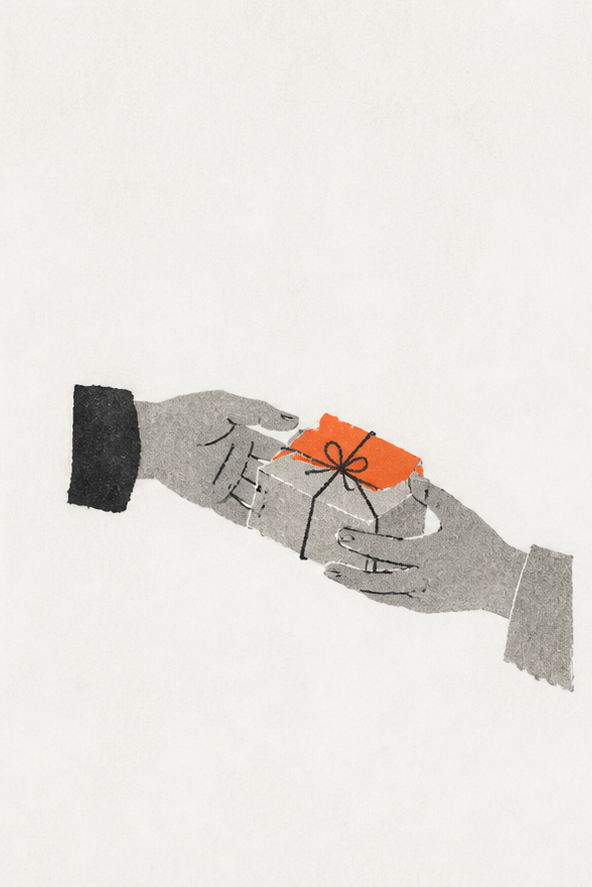
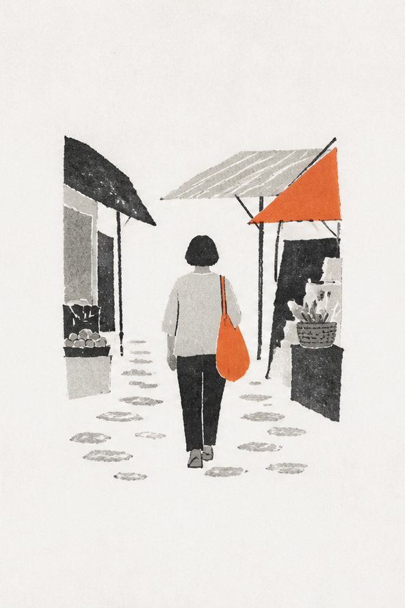
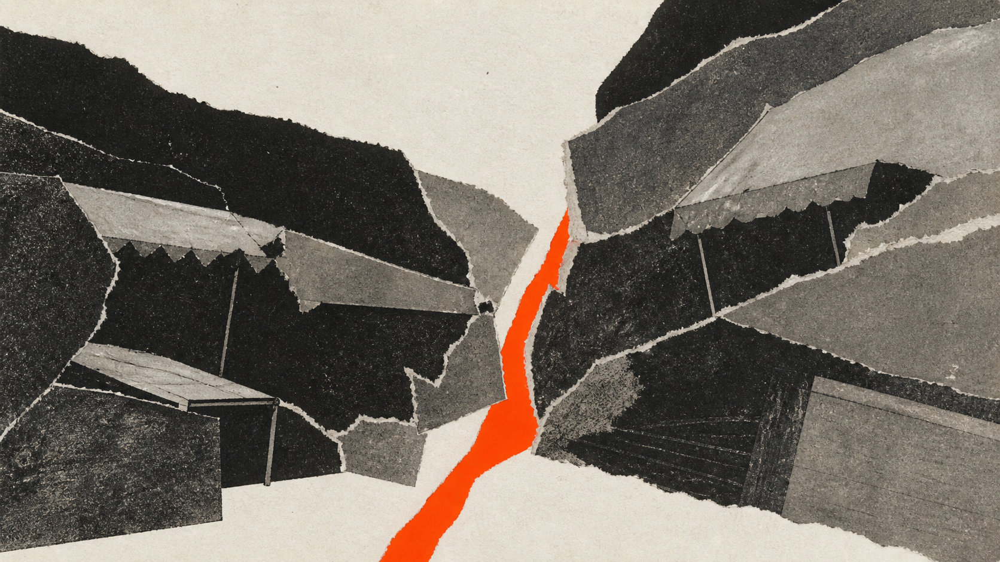
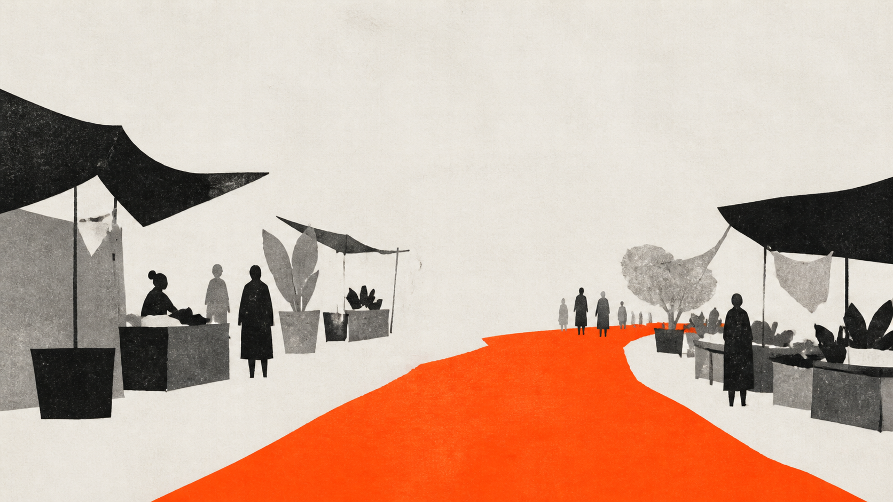

01 / RHYTHM
Protect repetition
Retain the cues and sequences through which daily rituals remain recognizable.

Recognition lives in repeated encounters: what people touch, do, follow, and can still reach.
Baskets, canopies, thresholds, tools, and signs create recognizable cues.
Opening, bargaining, wrapping, waiting, and greeting turn cues into habits.
Paths connect entrances, stalls, pauses, and exits into a readable sequence.
Affordability and vendor presence decide who can keep participating.




Change one route, and objects, rituals, and access all lose their shared sequence.
One mark equals one percentage point. The orange cluster turns the recurring threshold into evidence.
Preserve 64% · redevelop 23% · undecided 13% · illustrative values only.
Retain the cues and sequences through which daily rituals remain recognizable.
Protect affordable stalls, vendor presence, and routes people can still use.
Upgrade safety and infrastructure without erasing the pattern that carries memory.
